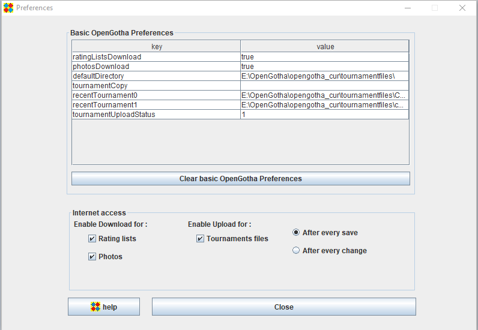

Preferences
As opposed to parameters, attached to a tournament and stored in the tournament file, preferences are installed on a computer
and stored in the register (Windows) or a dedicated file (Linux and Mac OS).
OpenGotha uses preferences to store
- The default type of rating list
- The default registration status, Preliminary or Final
- The list of recent tournaments
- The journaling informations
- The Internet access authorizations

Internet access authorizations
- Rating list downloads
Enables/Disables the possibility to download rating lists
- Photos downloads
Enables/Disables the possibility to download photos from EGD
- Journaling report
Enables/Disables the possibility to upload Journaling reports
Journaling report data are sent to the author of this program. It is highly recommended to keep journaling enabled.